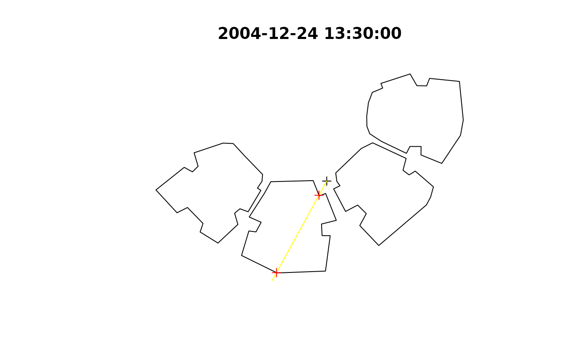

R/shadowHeight.R
shadowHeight.RdThis function calculates shadow height at given points or complete grid (location),
taking into account:
Obstacles outline (obstacles), given by a polygonal layer with a height attribute (obstacles_height_field)
Sun position (solar_pos), given by azimuth and elevation angles
# S4 method for SpatialPoints shadowHeight( location, obstacles, obstacles_height_field, solar_pos = solarpos2(location, time), time = NULL, b = 0.01, parallel = getOption("mc.cores"), filter_footprint = FALSE ) # S4 method for Raster shadowHeight( location, obstacles, obstacles_height_field, solar_pos = solarpos2(pnt, time), time = NULL, b = 0.01, parallel = getOption("mc.cores"), filter_footprint = FALSE )
| location | A |
|---|---|
| obstacles | A |
| obstacles_height_field | Name of attribute in |
| solar_pos | A |
| time | When |
| b | Buffer size when joining intersection points with building outlines, to determine intersection height |
| parallel | Number of parallel processes or a predefined socket cluster. With |
| filter_footprint | Should the points be filtered using |
Returned object is either a numeric matrix or a Raster* -
If input location is a SpatialPoints*, then returned object is a matrix, where rows represent spatial locations (location features), columns represent solar positions (solar_pos rows) and values represent shadow height
If input location is a Raster*, then returned object is a RasterLayer or RasterStack where layers represent solar positions (solar_pos rows) and pixel values represent shadow height
In both cases the numeric values express shadow height -
NA value means no shadow
A valid number expresses shadow height, in CRS units (e.g. meters)
Inf means complete shadow (i.e. sun below horizon)
For a correct geometric calculation, make sure that:
The layers location and obstacles are projected and in same CRS
The values in obstacles_height_field of obstacles are given in the same distance units as the CRS (e.g. meters when using UTM)
# Single location location = rgeos::gCentroid(build) location_geo = matrix(c(34.7767978098526, 31.9665936050395), ncol = 2) time = as.POSIXct("2004-12-24 13:30:00", tz = "Asia/Jerusalem") solar_pos = maptools::solarpos(location_geo, time) plot(build, main = time)sun = shadow:::.sunLocation(location = location, sun_az = solar_pos[1,1], sun_elev = solar_pos[1,2]) sun_ray = ray(from = location, to = sun) build_outline = as(build, "SpatialLinesDataFrame") inter = rgeos::gIntersection(build_outline, sun_ray) plot(sun_ray, add = TRUE, col = "yellow")shadowHeight( location = location, obstacles = build, obstacles_height_field = "BLDG_HT", solar_pos = solar_pos )#> [,1] #> [1,] 19.86451# Automatically calculating 'solar_pos' using 'time' proj4string(build) = CRS("+init=epsg:32636") proj4string(location) = CRS("+init=epsg:32636") shadowHeight( location = location, obstacles = build, obstacles_height_field = "BLDG_HT", time = time )#> Warning: CRS object has comment, which is lost in output#> Warning: CRS object has comment, which is lost in output#> Warning: CRS object has comment, which is lost in output#> Warning: spgeom1 and spgeom2 have different proj4 strings#> [,1] #> [1,] 19.86451if (FALSE) { # Two points - three times location0 = rgeos::gCentroid(build) location1 = raster::shift(location0, 0, -15) location2 = raster::shift(location0, -10, 20) locations = rbind(location1, location2) time = as.POSIXct("2004-12-24 13:30:00", tz = "Asia/Jerusalem") times = seq(from = time, by = "1 hour", length.out = 3) shadowHeight( ## Using 'solar_pos' location = locations, obstacles = build, obstacles_height_field = "BLDG_HT", solar_pos = maptools::solarpos(location_geo, times) ) shadowHeight( ## Using 'time' location = locations, obstacles = build, obstacles_height_field = "BLDG_HT", time = times ) # Grid - three times time = as.POSIXct("2004-12-24 13:30:00", tz = "Asia/Jerusalem") times = seq(from = time, by = "1 hour", length.out = 3) ext = as(raster::extent(build), "SpatialPolygons") r = raster::raster(ext, res = 2) proj4string(r) = proj4string(build) x = Sys.time() shadow1 = shadowHeight( location = r, obstacles = build, obstacles_height_field = "BLDG_HT", time = times, parallel = 3 ) y = Sys.time() y - x x = Sys.time() shadow2 = shadowHeight( location = r, obstacles = build, obstacles_height_field = "BLDG_HT", solar_pos = solarpos2(r, times), parallel = 3 ) y = Sys.time() y - x shadow = shadow1 opar = par(mfrow = c(1, 3)) for(i in 1:raster::nlayers(shadow)) { plot(shadow[[i]], col = grey(seq(0.9, 0.2, -0.01)), main = raster::getZ(shadow)[i]) raster::contour(shadow[[i]], add = TRUE) plot(build, border = "red", add = TRUE) } par(opar) }